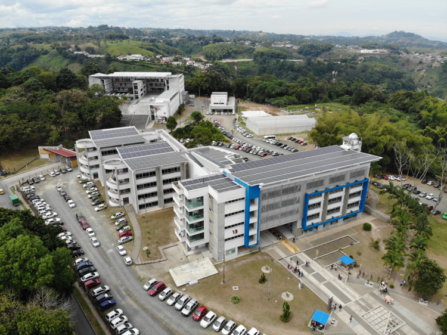

COLOMBIA · ENGINEERING PHYSICS · 2019–2023
Universidad Tecnológica de Pereira (UTP)
Ingeniería Física
B.Engineering physics training covering solid-state physics, electromagnetism, optics, experimental methods and scientific computing.
Official program ↗